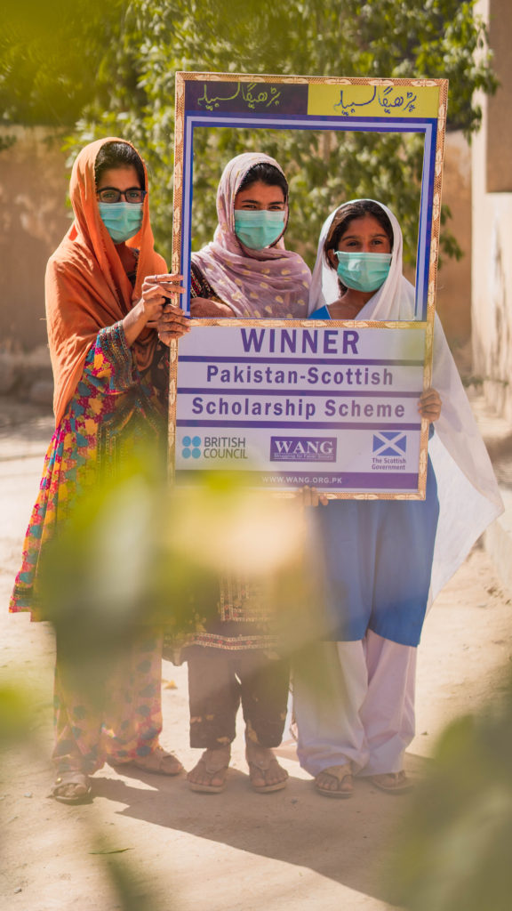
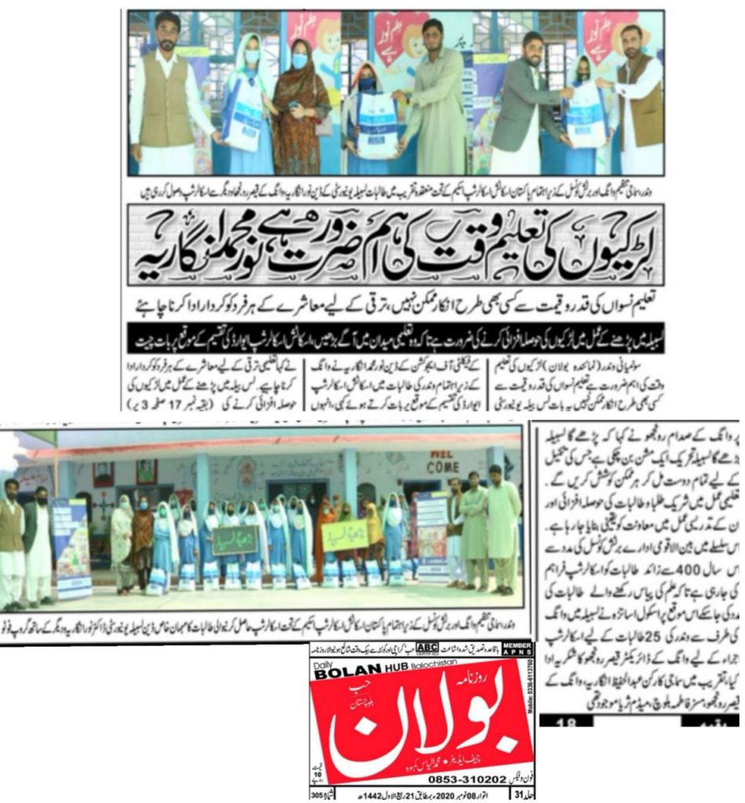

For the past five years, WANG has been partnering with The British Council Pakistan to implement Pakistan-Scottish Scholarship Scheme for school children in Lasbela.
We started this journey together with 40 students for the year 2014-2015 since then the program has touched so many lives and has contributed to changing the lives of many deserving students of Lasbela through financial support. This year with the support of our partners we were able to reach out to 400 girls of Lasbela through the scholarship.

Over the years program has touched the lives of hundreds of children of Lasbela by providing them the needed resources to continue their education.
400 students of 9th and 10th grade of 26 schools of Lasbela were awarded the scholarship.
A percentage of total scholarship was dedicated to girls from minorities and girls with special needs groups.
Due to COVID-19 instead of arranging a mega distribution event, a school to school distribution was done by the WANG team. Small gathering including students of the school, WANG team, and one or two community notables, district education office representatives were present in each school.
COVID-19 SOPs were followed during the distribution drive.
We used this distribution drive as an opportunity to engage communities and talk about the importance of girls' education and how the Pakistan-Scottish Scholarship Scheme for school children is helping students of Lasbela.
WANG also spoke in a short media briefing with local journalists to highlight the importance of girls' education in Lasbela and challenges to girls' education that we learned during our school visit through our distribution drive by interacting with girls.

WANG has been implementing the Pakistan-Scottish Scholarship program under it is well recognized and well-known campaign of “Parhega Lasbela Barhega Lasbela” this year’s Pakistan-Scottish Scholarship Scheme program has received great media coverage in national and local media.
More pictures are on our Facebook page.